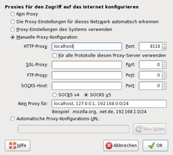
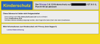

Privoxy
Dieser Artikel wurde für die folgenden Ubuntu-Versionen getestet:
Ubuntu 16.04 Xenial Xerus
Ubuntu 14.04 Trusty Tahr
Zum Verständnis dieses Artikels sind folgende Seiten hilfreich:
Privoxy  – der Name steht für Privacy Enhancing Proxy – ist zum Schutz der Privatsphäre beim Internet-Surfen gedacht. Mit Privoxy können mit wenig Aufwand aufgerufene Webseiten nach eigenen Regeln gefiltert werden. So können beispielsweise Werbebanner automatisch aus dem Seiteninhalt entfernt werden. Auch die Verfolgung des Nutzerverhaltens durch Cookies kann mit Privoxy verhindert werden. Privoxy ist ein sogenannter Content-Filtering-Proxy.
– der Name steht für Privacy Enhancing Proxy – ist zum Schutz der Privatsphäre beim Internet-Surfen gedacht. Mit Privoxy können mit wenig Aufwand aufgerufene Webseiten nach eigenen Regeln gefiltert werden. So können beispielsweise Werbebanner automatisch aus dem Seiteninhalt entfernt werden. Auch die Verfolgung des Nutzerverhaltens durch Cookies kann mit Privoxy verhindert werden. Privoxy ist ein sogenannter Content-Filtering-Proxy.
Installation¶
Privoxy kann direkt aus den offiziellen Paketquellen installiert [1] werden. Folgendes Paket wird benötigt:
privoxy (universe)
 mit apturl
mit apturl
Paketliste zum Kopieren:
sudo apt-get install privoxy
sudo aptitude install privoxy
Anschließend wird Privoxy automatisch gestartet und lauscht auf Port 8118.
Konfiguration¶
Privoxy wird über die ausführlich dokumentierte Datei /etc/privoxy/config konfiguriert. Zur Einrichtung von Privoxy muss diese mit einem Editor [4] und Root-Rechten [5] bearbeitet werden. Zu blockierende Elemente werden in der Datei /etc/privoxy/user.action eingetragen (siehe auch Werbefilter einrichten). Änderungen werden automatisch übernommen werden. Wie man den Privoxy-Dienst steuert, erfährt man mit dem Befehl [2]:
# bis 14.04 sudo /etc/init.d/privoxy # ab 16.04 sudo service privoxy
Weitere Einstellungen (siehe nächster Abschnitt) sind optional und nicht unbedingt erforderlich. Dann geht es weiter mit Privoxy im Browser aktivieren.
Weiterleitung¶
Privoxy kann Anfragen an einen vorgelagerten Proxyserver (parent proxy) weiterleiten. Ein Beispiel:
# 5.1. forward forward / PROXY:PORT forward :443 .
Hier werden alle Anfragen (/ = alle URLs) an einen vorgelagerten Proxy weitergeleitet. Davon ausgenommen sind Anfragen über den Port 443 (HTTPS), die als direkte Anfragen behandelt werden sollen. Will man eine Weiterleitung ausschließlich für bestimmte Domains einrichten, sieht die Zeile so aus:
forward .i2p localhost:4444
Dies leitet alle Aufrufe für DNS-Namen, die auf .i2p enden, an den eigenen Rechner auf Port 4444 weiter. Da keine Proxy-Art angegeben ist, erwartet Privoxy dort einen weiteren Webproxy.
SOCKS¶
Auf Wunsch kann auch ein SOCKS-Proxy genutzt werden:
# 5.2. forward-socks4 and forward-socks4a (neuere Versionen auch forward-socks5) # ... forward-socks4a / IP:PORT .
Wichtig: Bitte nicht den Punkt am Ende vergessen! Sonst ignoriert Privoxy den Eintrag. IP muss durch die IP-Adresse ersetzt werden, an welcher der andere Proxy lauscht (wenn er auf demselben PC läuft, ist die IPv4-Adresse 127.0.0.1), und PORT durch die entsprechenden Port-Nummer.
Protokollierung¶
Optional kann man innerhalb der Konfiguration das Erstellen von Protokollen (z.B. zur Fehlersuche) ein- oder ausschalten. Zum Deaktivieren setzt man das Zeichen # an den Zeilenanfang, zum Aktivieren entfernt man es wieder. Beispiel (deaktiviert):
# 2.5. logfile # ... # logfile logfile
Als Dienst im LAN¶
Soll Privoxy nicht nur lokal zur Verfügung stehen, sondern auch von anderen Rechnern im LAN erreichbar sein, so muss die Adresse geändert werden, auf der Privoxy lauscht. Hier muss die LAN-IP eingetragen werden. In diesem Beispiel 192.168.0.1:
# 4.1. listen-address # ... listen-address 192.168.0.1:8118
Dabei kann auch gleich aktiviert werden, dass Rechner aus dem lokalen Netzwerk (LAN) Privoxy über die Pseudo-Adresse http://p.p/ steuern können:
# 4.4. enable-edit-actions # 0 = deaktiviert, 1 = aktiviert enable-edit-actions 0
Privoxy im Browser aktivieren¶
 Damit Privoxy beim Surfen genutzt wird, müssen in den Netzwerkeinstellungen des Browsers der HTTP-Proxy und der Port angegeben werden:
localhost:8118
bzw.
<Server-IP>:8118
falls man Privoxy im LAN eingerichtet hat. Je nach Desktop-Umgebung können auch eigene Konfigurationswerkzeuge zur Einrichtung eines Proxys verwendet werden (siehe Proxyserver). Aber nicht jeder Browser berücksichtigt die Verwendung eines zentralen Proxys, und evtl. streiken manche Programme (z.B. die Paketverwaltung). Von daher ist man mit der direkten Konfiguration nur im Browser auf der sicheren Seite.
Werbefilter einrichten¶
Will man die Konfiguration ändern, etwa eine Werbe-URL hinzufügen, die Privoxy nicht selbst erkennt, geht das über die Pseudo-Adresse: http://p.p
Dort gibt es den Link "View & change the current configuration". Hier auf den Button "Edit" in der Zeile /etc/privoxy/user.action klicken. Den Abschnitt suchen, bei dem unter "Actions" lediglich "+block" steht. Dort die Domain des Werbe-Servers eintragen, angeführt von einem Punkt, aber ohne ein eventuelles "http://www". Das Resultat sind z.B. Einträge wie ".altfarm.xxx.com" oder ".adserv.xxx.de". Mit "Add" fügt man die Werbe-URL hinzu.
Analog trägt man Seiten, die irrtümlich ausgeblendet werden (zu erkennen an der "Blocked"-Meldung), unter "-block" ein. Hier wird auch der Link "go there anyway" angeboten, über den man blockierten Seiten trotzdem aufrufen kann.
Hinweis:
Auch in der Zeile /etc/privoxy/default.action gibt es einen "Edit"-Button. Davon sollte man aber keinen Gebrauch machen. Hier befinden sich die grundlegenden Regeln, nach denen Privoxy filtert. Anders als /etc/privoxy/user.action wird diese Datei bei einer Systemaktualisierung überschrieben.
EasyList¶
Um die Filterliste EasyList  (die unter anderem auch im Firefox Add-On Adblock verwendet wird) für Privoxy nutzen zu können, kann man ein Shell-Skript nutzen. Damit das Skript korrekt arbeiten kann, müssen aus dem Ordner /etc/privoxy/ alle selbst angelegten Dateien zu Aktionen (.action) und Filtern (.filter) entfernt werden (wurden keine Anpassungen vorgenommen, kann man diesen Hinweis ignorieren). Gestattet sind lediglich folgende Dateien:
(die unter anderem auch im Firefox Add-On Adblock verwendet wird) für Privoxy nutzen zu können, kann man ein Shell-Skript nutzen. Damit das Skript korrekt arbeiten kann, müssen aus dem Ordner /etc/privoxy/ alle selbst angelegten Dateien zu Aktionen (.action) und Filtern (.filter) entfernt werden (wurden keine Anpassungen vorgenommen, kann man diesen Hinweis ignorieren). Gestattet sind lediglich folgende Dateien:
config
default.*
global.action
match-all.action
trust
user.action
Außerdem sollte die Datei /etc/privoxy/config vorab auf Einträge zu benutzerdefinierten Aktionen und Filtern kontrolliert werden.
Gespeichert wird das Skript unter dem Namen ~/bin/privoxy-blocklist.sh oder /usr/local/bin/privoxy-blocklist.sh:
1 2 3 4 5 6 7 8 9 10 11 12 13 14 15 16 17 18 19 20 21 22 23 24 25 26 27 28 29 30 31 32 33 34 35 36 37 38 39 40 41 42 43 44 45 46 47 48 49 50 51 52 53 54 55 56 57 58 59 60 61 62 63 64 65 66 67 68 69 70 71 72 73 74 75 76 77 78 79 80 81 82 83 84 85 86 87 88 89 90 91 92 93 94 95 96 97 98 99 100 101 102 103 104 105 106 107 108 109 110 111 112 113 114 115 116 117 118 119 120 121 122 123 124 125 126 127 128 129 130 131 132 133 134 135 136 137 138 139 140 141 142 143 144 145 146 147 148 149 150 151 152 153 154 155 156 157 158 159 160 161 162 163 164 165 166 167 168 169 170 171 172 173 174 175 176 177 178 179 180 181 182 183 184 185 186 187 | #!/bin/bash # ###################################################################### # # Author: Andrwe Lord Weber # Mail: lord-weber-andrwe<at>renona-studios<dot>org # Version: 0.2 # URL: http://andrwe.dyndns.org/doku.php/blog/scripting/bash/privoxy-blocklist # ################## # # Sumary: # This script downloads, converts and installs # AdblockPlus lists into Privoxy # ###################################################################### ###################################################################### # # TODO: # - implement: # domain-based filter # ###################################################################### ###################################################################### # # script variables and functions # ###################################################################### # array of URL for AdblockPlus lists URLS=("https://easylist-downloads.adblockplus.org/easylistgermany.txt" "http://adblockplus.mozdev.org/easylist/easylist.txt") # privoxy config dir (default: /etc/privoxy/) CONFDIR=/etc/privoxy # directory for temporary files TMPDIR=/tmp/privoxy-blocklist TMPNAME=$(basename ${0}) ###################################################################### # # No changes needed after this line. # ###################################################################### function usage() { echo "${TMPNAME} is a script to convert AdBlockPlus-lists into Privoxy-lists and install them." echo " " echo "Options:" echo " -h: Show this help." echo " -q: Don't give any output." echo " -v 1: Enable verbosity 1. Show a little bit more output." echo " -v 2: Enable verbosity 2. Show a lot more output." echo " -v 3: Enable verbosity 3. Show all possible output and don't delete temporary files.(For debugging only!!)" echo " -r: Remove all lists build by this script." } [ ${UID} -ne 0 ] && echo -e "Root privileges needed. Exit.\n\n" && usage && exit 1 # check whether an instance is already running [ -e ${TMPDIR}/${TMPNAME}.lock ] && echo "An Instance of ${TMPNAME} is already running. Exit" && exit DBG=0 function debug() { [ ${DBG} -ge ${2} ] && echo -e "${1}" } function main() { cpoptions="" [ ${DBG} -gt 0 ] && cpoptions="-v" for url in ${URLS[@]} do debug "Processing ${url} ...\n" 0 file=${TMPDIR}/$(basename ${url}) actionfile=${file%\.*}.script.action filterfile=${file%\.*}.script.filter list=$(basename ${file%\.*}) # download list debug "Downloading ${url} ..." 0 wget -t 3 --no-check-certificate -O ${file} ${url} >${TMPDIR}/wget-${url//\//#}.log 2>&1 debug "$(cat ${TMPDIR}/wget-${url//\//#}.log)" 2 debug ".. downloading done." 0 [ "$(grep -E '^\[Adblock.*\]$' ${file})" == "" ] && echo "The list recieved from ${url} isn't an AdblockPlus list. Skipped" && continue # convert AdblockPlus list to Privoxy list # blacklist of urls debug "Creating actionfile for ${list} ..." 1 echo -e "{ +block{${list}} }" > ${actionfile} sed '/^!.*/d;1,1 d;/^@@.*/d;/\$.*/d;/#/d;s/\./\\./g;s/\?/\\?/g;s/\*/.*/g;s/(/\\(/g;s/)/\\)/g;s/\[/\\[/g;s/\]/\\]/g;s/\^/[\/\&:\?=_]/g;s/^||/\./g;s/^|/^/g;s/|$/\$/g;/|/d' ${file} >> ${actionfile} debug "... creating filterfile for ${list} ..." 1 echo "FILTER: ${list} Tag filter of ${list}" > ${filterfile} # set filter for html elements sed '/^#/!d;s/^##//g;s/^#\(.*\)\[.*\]\[.*\]*/s|<([a-zA-Z0-9]+)\\s+.*id=.?\1.*>.*<\/\\1>||g/g;s/^#\(.*\)/s|<([a-zA-Z0-9]+)\\s+.*id=.?\1.*>.*<\/\\1>||g/g;s/^\.\(.*\)/s|<([a-zA-Z0-9]+)\\s+.*class=.?\1.*>.*<\/\\1>||g/g;s/^a\[\(.*\)\]/s|<a.*\1.*>.*<\/a>||g/g;s/^\([a-zA-Z0-9]*\)\.\(.*\)\[.*\]\[.*\]*/s|<\1.*class=.?\2.*>.*<\/\1>||g/g;s/^\([a-zA-Z0-9]*\)#\(.*\):.*[:[^:]]*[^:]*/s|<\1.*id=.?\2.*>.*<\/\1>||g/g;s/^\([a-zA-Z0-9]*\)#\(.*\)/s|<\1.*id=.?\2.*>.*<\/\1>||g/g;s/^\[\([a-zA-Z]*\).=\(.*\)\]/s|\1^=\2>||g/g;s/\^/[\/\&:\?=_]/g;s/\.\([a-zA-Z0-9]\)/\\.\1/g' ${file} >> ${filterfile} debug "... filterfile created - adding filterfile to actionfile ..." 1 echo "{ +filter{${list}} }" >> ${actionfile} echo "*" >> ${actionfile} debug "... filterfile added ..." 1 debug "... creating and adding whitlist for urls ..." 1 # whitelist of urls echo "{ -block }" >> ${actionfile} sed '/^@@.*/!d;s/^@@//g;/\$.*/d;/#/d;s/\./\\./g;s/\?/\\?/g;s/\*/.*/g;s/(/\\(/g;s/)/\\)/g;s/\[/\\[/g;s/\]/\\]/g;s/\^/[\/\&:\?=_]/g;s/^||/\./g;s/^|/^/g;s/|$/\$/g;/|/d' ${file} >> ${actionfile} debug "... created and added whitelist - creating and adding image handler ..." 1 # whitelist of image urls echo "{ -block +handle-as-image }" >> ${actionfile} sed '/^@@.*/!d;s/^@@//g;/\$.*image.*/!d;s/\$.*image.*//g;/#/d;s/\./\\./g;s/\?/\\?/g;s/\*/.*/g;s/(/\\(/g;s/)/\\)/g;s/\[/\\[/g;s/\]/\\]/g;s/\^/[\/\&:\?=_]/g;s/^||/\./g;s/^|/^/g;s/|$/\$/g;/|/d' ${file} >> ${actionfile} debug "... created and added image handler ..." 1 debug "... created actionfile for ${list}." 1 # install Privoxy actionsfile cp ${cpoptions} ${actionfile} ${CONFDIR} if [ "$(grep $(basename ${actionfile}) ${CONFDIR}/config)" == "" ] then debug "\nModifying ${CONFDIR}/config ..." 0 sed "s/^actionsfile user\.action/actionsfile $(basename ${actionfile})\nactionsfile user.action/" ${CONFDIR}/config > ${TMPDIR}/config debug "... modification done.\n" 0 debug "Installing new config ..." 0 cp ${cpoptions} ${TMPDIR}/config ${CONFDIR} debug "... installation done\n" 0 fi # install Privoxy filterfile cp ${cpoptions} ${filterfile} ${CONFDIR} if [ "$(grep $(basename ${filterfile}) ${CONFDIR}/config)" == "" ] then debug "\nModifying ${CONFDIR}/config ..." 0 sed "s/^\(#*\)filterfile user\.filter/filterfile $(basename ${filterfile})\n\1filterfile user.filter/" ${CONFDIR}/config > ${TMPDIR}/config debug "... modification done.\n" 0 debug "Installing new config ..." 0 cp ${cpoptions} ${TMPDIR}/config ${CONFDIR} debug "... installation done\n" 0 fi debug "... ${url} installed successfully.\n" 0 done } # create temporary directory and lock file mkdir -p ${TMPDIR} touch ${TMPDIR}/${TMPNAME}.lock # set command to be run on exit [ ${DBG} -le 2 ] && trap "rm -fr ${TMPDIR};exit" INT TERM EXIT # loop for options while getopts ":hrqv:" opt do case "${opt}" in "h") usage exit 0 ;; "v") DBG="${OPTARG}" ;; "q") DBG=-1 ;; "r") echo "Do you really want to remove all build lists?(y/N)" read choice [ "${choice}" != "y" ] && exit 0 rm -rf ${CONFDIR}/*.script.{action,filter} && \ sed '/^actionsfile .*\.script\.action$/d;/^filterfile .*\.script\.filter$/d' -i ${CONFDIR}/config && \ echo "Lists removed." && exit 0 echo -e "An error occured while removing the lists.\nPlease have a look into ${CONFDIR} whether there are .script.* files and search for *.script.* in ${CONFDIR}/config." exit 1 ;; ":") echo "${TMPNAME}: -${OPTARG} requires an argument" >&2 exit 1 ;; esac done debug "URL-List: ${URLS}\nPrivoxy-Configdir: ${CONFDIR}\nTemporary directory: ${TMPDIR}" 2 main # restore default exit command trap - INT TERM EXIT [ ${DBG} -lt 2 ] && rm -r ${TMPDIR} [ ${DBG} -eq 2 ] && rm -vr ${TMPDIR} exit 0 |
Das Skript muss mit Root-Rechten [5] gestartet werden [3]:
sudo bash privoxy-blocklist.sh -v 1
Nun werden automatisch:
die aktuellen Filterlisten "EasyList" und "EasyList Germany" heruntergeladen
für die Nutzung mit Privoxy umgewandelt
in den Ordner /etc/privoxy/ kopiert und
in der Datei /etc/privoxy/config eingetragen
Die neue Konfiguration wird von Privoxy automatisch erkannt. Empfehlenswert ist – bedingt durch den Zwischenspeicher (Cache) – ein Neustart des Webbrowsers. Das Skript kann man später (beispielsweise ein- bis zweimal im Monat) immer wieder erneut ausführen, um die Filterlisten zu aktualisieren. Fortgeschrittene können sich dazu einen Cron-Job einrichten.
Die angepasste Konfiguration und alle erzeugten Listen lassen sich mit dem Befehl:
sudo bash privoxy-blocklist.sh -r
wieder vollständig und rückstandsfrei vom Rechner entfernen.
Kinderschutz einrichten¶
 Die folgende Idee basiert auf einer Kindersicherung, die Dieter Schütze im Rahmen des ehemaligen Projekts "KinderTux" sehr elegant umgesetzt hat. Es werden zwei Dateien mit Regeln benötigt, zur Erstellung braucht man Root-Rechte:
/etc/privoxy/blacklist.action - einzige Regel: es ist alles verboten. Inhalt:
{+block{Kinderschutz aktiv}} / # alles blockieren!/etc/privoxy/whitelist.action - erlaubte Ausnahmen. Inhalt:
{-block} .privoxy.org .wdrmaus.de .die-maus.de .hirnwindungen.de .mathe-spass.de .learnetix.de .wikipedia.org .wikimedia.org .fragfinn.de .geolino.de .geo.de .blinde-kuh.de .br-online.de .derkleinekoenig.de .kika.de .kindersache.de .kindernetz.de .seitenstark.de .rbb-online.de .kidsweb.de .bmu-kids.de .br-online.de .helles-koepfchen.de .kidsville.de .legakids.net .lilipuz.de .milkmoon.de .pixelkids.de .pomki.de .labbe.de .hamsterkiste.de .physikfuerkids.de .sowieso.de .hanisauland.de .rossipotti.de .wasistwas.de .wolf-kinderclub.de .kidnetting.de .radio108komma8.de .klasse-wasser.de .oekolandbau.de .news4kids.de .primolo.de .starke-pfoten.de .internet-abc.de .notenmax.de .lucylehmann.de .kidkit.de .junge-klassik.de .medizin-fuer-kids.de .global-gang.de .klickerkids.de .kinderrathaus.de .bayerische.staatsoper.de .zum.de .mechant-loup.schule.de .prinzessin-knoepfchen.de .1000-maerchen.de .creativecommons.org .toggo.de .toggolino.de
Hinweis:
Diese Liste mit Ausnahmen ist nur ein Beispiel und sollte unbedingt – am besten nach Rücksprache mit den Kindern – angepasst werden! Weitere Informationen sind im Artikel Kinder zu finden.
Nun müssen diese Regeln noch aktiviert werden. Dazu bearbeitet [4] man die Datei /etc/privoxy/config mit Root-Rechten [5], sucht den Abschnitt "actionsfile", deaktiviert die vorhandenen Einträge (durch ein # am Zeilenanfang) und fügt die beiden neuen Regeln hinzu. Beispiel:
#actionsfile match-all.action # Actions that are applied to all sites and maybe overruled later on. #actionsfile default.action # Main actions file #actionsfile user.action # User customizations actionsfile blacklist.action # alle blockieren actionsfile whitelist.action # erlaubte Seiten
Die neue Konfiguration wird automatisch erkannt. Empfehlenswert ist – bedingt durch den Zwischenspeicher (Cache) – ein Neustart des Webbrowsers. Weitere erlaubte Webseiten werden später einfach in /etc/privoxy/whitelist.action nachgetragen [4][5].
Deutsche und für Kinder (die bereits lesen können) verständliche Fehlermeldungen erreicht man durch den Austausch der Dateien /etc/privoxy/templates/blocked  und /etc/privoxy/templates/cgi-style.css . Leider fehlt im Gegensatz zum Original eine grafische Oberfläche, mit der man bei KinderTux neue Adressen bequem hinzufügen konnte.
und /etc/privoxy/templates/cgi-style.css . Leider fehlt im Gegensatz zum Original eine grafische Oberfläche, mit der man bei KinderTux neue Adressen bequem hinzufügen konnte.
Alternativ gibt es mit KinderServer eine hervorragende Alternative, die das Erstellen einer eigenen "Whitelist" (erlaubte Adressen) überflüssig machen kann.
Funktion überprüfen¶
Die Aktivitäten von Privoxy lassen sich im Terminal beobachten. Dazu muss die Protokollierung aktiv sein:
sudo tail -f /var/log/privoxy/logfile
Mehr zum Thema Logdateien.
Problembehebung¶
Privoxy nach Neustart nicht verfügbar¶
Immer wieder berichten Anwender, dass Privoxy beim Systemstart scheinbar nicht automatisch gestartet wird. Zwar läuft das Programm, aber ein Clientprogramm (z.B. ein Webbrowser) meldet trotzdem einen Fehler. In der Regel hilft ein manueller Neustart (des Dienstes) mit:
sudo /etc/init.d/privoxy restart #bzw. sudo service privoxy restart
Eine andere pragmatische Lösung ist ein automatischer Neustart via /etc/rc.local:
# startet Privoxy 30 Sekunden nach Systemstart erneut (/bin/sleep 30 && /etc/init.d/privoxy restart)
Alternativ kann auch ein Cronjob eingerichtet werden.
Midori kann sich nicht mit lokalem Privoxy verbinden¶
Wenn man Midori in Kombination mit einem lokalen Privoxy verwenden möchte, kann es passieren, dass Midori die Fehlermeldung "Cannot connect to proxy (127.0.0.1)" oder "Connection terminated unexpectedly" ausgibt. Hier sollte man zunächst versuchen, statt der IP-Adresse localhost als Rechnernamen zu benutzen. Hilft dies nicht, ändert man den Rechnernamen zurück auf 127.0.0.1, und fügt der Konfigurationsdatei /etc/privoxy/config zwei Zeilen zu:
im Abschnitt 4.1 (
## listen-address) die Zeile:listen-address 127.0.0.1:8118
im Abschnitt 4.7 (
## ACLs: permit-access and deny-access) die Zeile:permit-access 127.0.0.1
Anschließend startet man Privoxy neu.
Chromium¶
Chromium bzw. Google Chrome berücksichtigt unter GNOME und KDE die systemweiten Proxy-Einstellungen automatisch. Benutzer anderer Desktop-Umgebungen wie Xfce und LXDE oder alternativer Fenstermanager müssen selbst Hand anlegen, um Privoxy verwenden zu können: Chromium Proxy-Einstellungen.
Links¶
Ad server hostnames
- Liste von Peter LoweProxyserver - System für Proxy-Nutzung konfigurieren
- Erstellt mit Inyoka
-
 2004 – 2017 ubuntuusers.de • Einige Rechte vorbehalten
2004 – 2017 ubuntuusers.de • Einige Rechte vorbehalten
Lizenz • Kontakt • Datenschutz • Impressum • Serverstatus -
Serverhousing gespendet von